For continuously differentiable
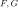
on phase space, the Poisson bracket is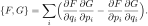
The bracket is bilinear, antisymmetric, satisfies the Leibniz rule
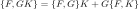
, and satisfies the Jacobi identity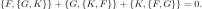
Bilinearity is immediate from linearity of the partial derivatives, and antisymmetry from exchanging the two terms of the sum. The Leibniz rule is the product rule applied to each partial derivative of
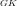
.For Jacobi, observe that each of the three double brackets is a sum of terms containing second derivatives of exactly one of
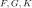
. Collect the terms carrying second derivatives of : they come from
: they come from
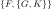
and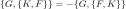
, and their sum is the expression obtained by applying the antisymmetric second-order operator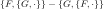
to. That
operator is a first-order derivation – its second-order parts cancel
because mixed partials commute – so no second derivatives of
survive. By symmetry the same holds for  and
and  , and a sum with
no second-derivative terms and no first-derivative terms is zero.
, and a sum with
no second-derivative terms and no first-derivative terms is zero.
Along any solution of Hamilton's equations, a continuously differentiable observable
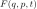
satisfies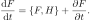
is conserved if and only if
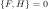
.By the chain rule,
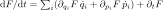
. Substituting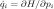
and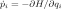
turns the sum into exactly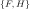
.
If and are conserved and time-independent, so is
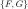
.By the Jacobi identity,
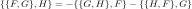
, and both brackets on the right vanish because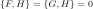
. Hence has vanishing bracket with and is conserved.
and is conserved.
The corollary is why the Jacobi identity is worth proving rather than quoting: it says the conserved quantities form a Lie subalgebra, so symmetries can be combined, and it is the classical shadow of the commutator identity that plays the same role in quantum mechanics.